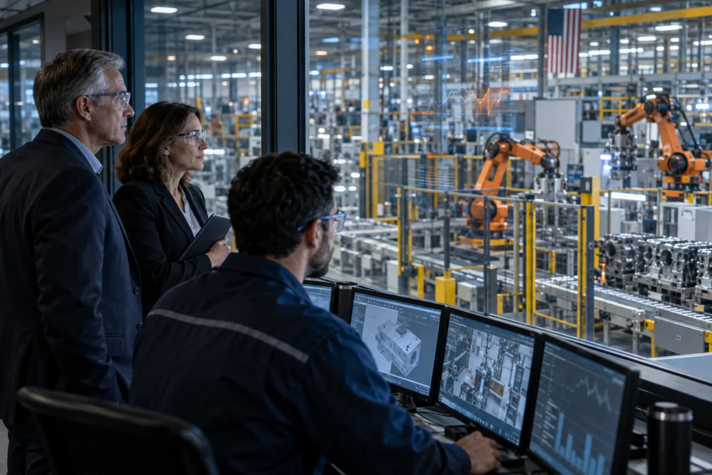
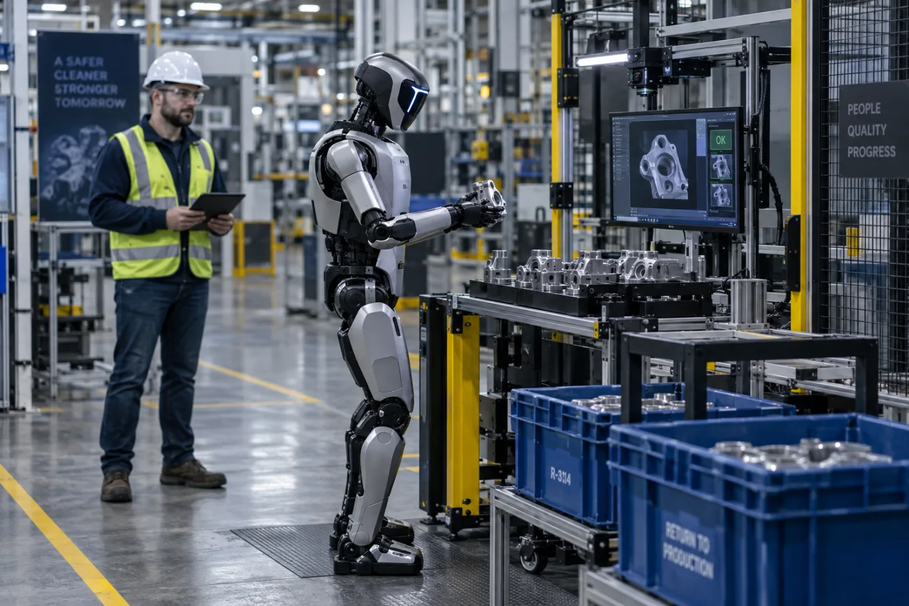
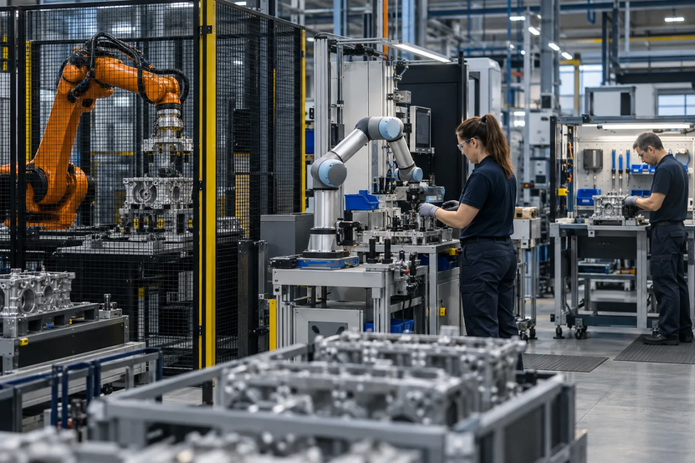
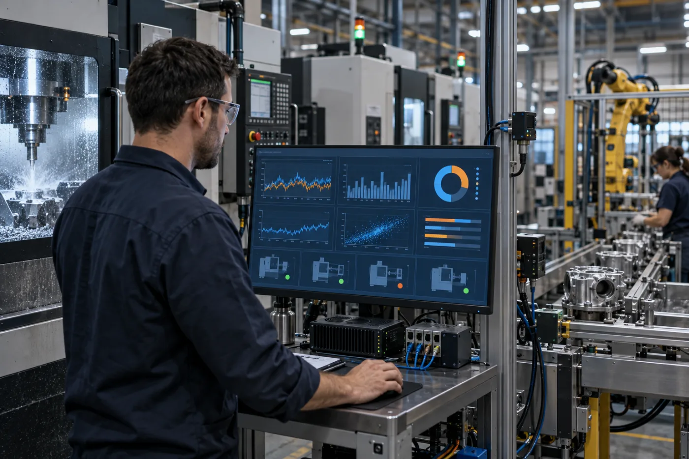
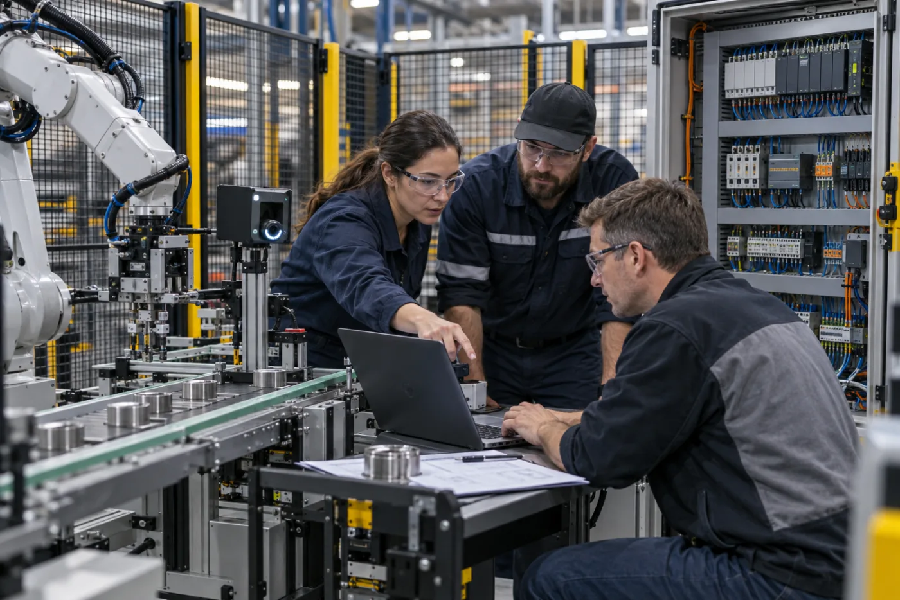
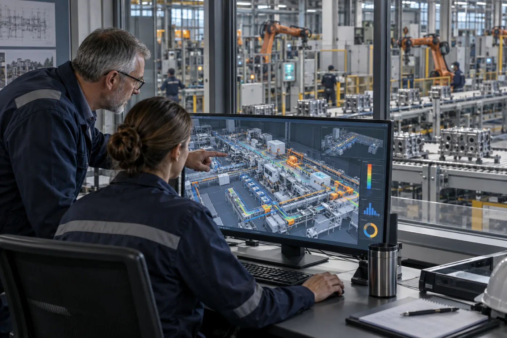

Separate credible operational applications from demonstration, novelty and unproven scale.
IEX 2026 · Global online conference
Physical AI in ManufacturingThe Next Five Years Start Today.
A focused one-day broadcast for owners, executives, plant leaders, technologists and implementation partners who need to understand what Physical AI can credibly change—and what must happen before it reaches the factory floor.
October 28, 2026Global online broadcast
Charlotte: 9:00 AM–3:00 PMEastern Daylight Time (EDT, UTC−4)
Berlin: 2:00–8:00 PM · Central European Time (CET, UTC+1)
Berlin: 2:00–8:00 PM · Central European Time (CET, UTC+1)
Five expert panelsPractical management decisions
Free registrationReport and materials included
IEX is organized by DBR77 and promoted with industry partners. Membership references indicate DBR77 affiliations; they do not imply event endorsement unless separately announced.
Why this conference
Move from fascination to a factory decision.
IEX is built around the questions manufacturing leaders must answer before committing people, capital and operating responsibility.
Connect technology with data, integration, safety, skills, ownership and financial logic.
Use the report and post-event materials to structure a real discussion inside your organization.
The program
Five panels. Five decisions.
Each conversation begins with an executive question and ends with a practical takeaway—not a vendor pitch.
Opening · Report premiere
9:00–9:30 AM EDT2:00–2:30 PM CET
Physical AI in American Manufacturing 2026
The opening briefing connects market signals, adoption barriers and management choices. Every registered participant receives the report and approved post-event materials, whether or not they attend live.
Presented by


PANEL · HUMANOID ROBOTS
9:30–10:30 AM EDT2:30–3:30 PM CET
Humanoids Enter the Factory: Breakthrough or Expensive Experiment?
Where can humanoids create value—and what evidence is required before deployment?
Three theses
- The first value will come from specific tasks, not general replacement.
- Safety, reliability and workflow redesign matter more than a staged demo.
- A credible business case needs utilization, integration and lifecycle cost.
What you leave with
A practical filter for deciding whether a humanoid use case deserves further engineering.
TBA
TBA
TBA
TBA

PANEL · ROBOTS & COBOTS
10:30–11:30 AM EDT3:30–4:30 PM CET
Robots, Cobots or No Robot?
How should leaders choose the right level of automation for a real process?
Three theses
- Start with bottlenecks, safety and quality—not a preferred technology.
- Flexibility and changeover can dominate nominal cycle time.
- Total integration and operating cost decide ROI.
What you leave with
A decision sequence for comparing manual work, cobots, industrial robots and process redesign.

PANEL · MANUFACTURING DATA & AI
11:30 AM–12:30 PM EDT4:30–5:30 PM CET
Your Factory Has Data. Can AI Actually Use It?
What must be true before factory data becomes decision-grade intelligence?
Three theses
- More data does not compensate for missing context and ownership.
- Closed-loop value begins with a specific operational decision.
- Human validation remains essential where production risk is material.
What you leave with
A readiness checklist from machine signal to trusted operational action.
TBA

PANEL · SYSTEM INTEGRATION
12:30–1:30 PM EDT5:30–6:30 PM CET
The Automation Blame Game
Why do good technologies still become disappointing implementation projects?
Three theses
- Unclear ownership creates technical and commercial ambiguity.
- Acceptance criteria must cover the process, not only the machine.
- Manufacturers and integrators need a shared evidence model.
What you leave with
A clearer project contract: baseline, owner, scope, evidence, acceptance and lifecycle responsibility.

PANEL · AI & GLOBAL BUSINESS
1:30–2:30 PM EDT6:30–7:30 PM CET
AI and the Future of Global Business
How is AI reshaping global business—from physical operations to digital work—and what can leaders learn from different approaches to adoption around the world?
Three theses
- AI is transforming physical operations and digital business processes, creating opportunities alongside practical challenges.
- Experience across international markets offers different perspectives on AI adoption, readiness and competitive advantage.
- Successful adoption requires balancing business value, costs and compliance while preparing people and organizations for change.
What you leave with
Practical insights from four AI experts to help you assess opportunities, understand risks and identify next steps for your business.
In partnership withNorth Carolina World Trade Association
Included with registration
Physical AI in American Manufacturing 2026
The report translates the conference into an executive decision tool.
- State of adoption and the practical Physical AI landscape
- Readiness conditions for robotics, data and intelligent operations
- The changing role of system integrators
- Five management decisions for the next factory
- Post-event panel materials and approved recordings
You receive the report and post-event package even if you cannot attend live.
Register and receive the reportIEX 2026 · DBR77Physical AI in American ManufacturingExecutive report · Five panels · Practical decision tools
Broadcast schedule · October 28, 2026
One focused day.
Times are shown for Charlotte (Eastern Daylight Time, EDT, UTC−4) and Berlin (Central European Time, CET, UTC+1). Short breaks separate the conversations. Approved recordings and materials follow by email after the event.
Report premiere and opening briefingPhysical AI in American Manufacturing 2026.
Panel · Humanoid Robots
Panel · Robots & Cobots
Panel · Manufacturing Data & AI
Panel · System Integration
Panel · AI & Global Business
Closing: from insight to the next 90 days
Free registration
Join live—or register for the report and follow-up materials.
This is one standard conference registration. Attendance is not required to receive the report and approved post-event package.
For partners
One professional registration destination.
Industry associations, media, universities and technology partners can promote this page directly. Every visitor sees the same program, receives the same registration confirmation and enters one governed HubSpot journey.
FAQ
Before you register.
Is IEX 2026 free?
Yes. Registration, online access, the report and approved post-event materials are free.
What if I cannot attend live?
Register anyway. The report and approved post-event materials will be sent to the registered email after the conference.
Is this an online or in-person event?
IEX 2026 is a global online conference produced from Charlotte, North Carolina.
Can I attend only selected panels?
Yes. One registration covers the full program; join the conversations most relevant to you.
Are all speakers confirmed?
Speaker announcements will be published only after confirmation. Invited experts are never presented as confirmed participants.
One report · Five panels · One next decision
Register once. Use the materials on your schedule.
October 28, 2026 · Global online conference · Free access
Register free